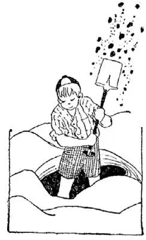
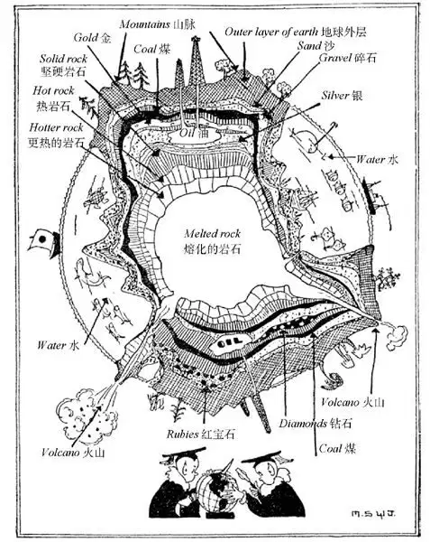

03
The Inside of the World
世界的内部

WHEN I was a very little boy I was very inquisitive. At least, that’s what my nurse called me.
One day when I was walking with her along the city pavements, I asked:
“Jane, what’s under the pavement?”
“Oh, just dirt,” she replied.
“And what is under the dirt?”
“Oh, more dirt,” she replied.
“Well, what’s under that?” I asked. I wasn’t satisfied.
“Oh, nothing—I don’t know—why are you always so inquisitive?” she asked.
I knew there must be something underneath that, and I just wanted to know what it was—I was just inquisitive.
I had heard that the place bad boys went when they died was down under the ground somewhere—a big cave, perhaps—and I wanted to know if that were so.
And then I had heard that all the way through on the other side of the World Chinamen lived, head down, and walked upside down like flies on the ceiling. I wanted to find out if that were so too.
So I made up my mind I’d dig down through the World; down, down, down, till I came through on the other side, and then I’d know. I was a very little boy, you see. With a tin shovel I started a hole in the back yard behind the grapevines, where no one would know what I was doing. I wanted to keep it a secret until I had dug all the way through. Day after day I worked, digging up first soft ground—that was easy—then I got down to solid ground; that was hard. I had a hole which I could stand in up to my waist.
Then one evening my father asked, “What’s that hole in the back yard?”
My secret was out. He didn’t laugh when I told him—at least, out loud—but he asked me if I knew how far I’d have to dig.
“Could you dig down as deep as the Washington Monument goes up ?” he asked.
I thought perhaps I could, but I was a little doubtful, for the Washington Monument seemed terribly high.
“Men have dug wells many times as deep as the Washington Monument,” my father told me, “but never all the way nor nearly all the way through the World. You would have to dig many thousands of times deeper than the Washington Monument to get down even to the center of the World. It’s eight thousand miles straight through the earth and most all the way is rock—just rock, and more rock, that’s all.”
Then I gave it up.
“How do you know it’s eight thousand miles if no one has ever been through the World?” asked the inquisitive child. I don’t know what my father answered. I was too young to understand. I wonder if you are too young, if I tell you how we know it’s eight thousand miles; for without ever having been through the World, we do know how far it is.

With a tin shovel I started to dig down through the World
This is how we know. It’s a funny thing, but every ball, whether it is a little ball or a medium-sized ball or a great big ball, is always just a little more than three times as big round as it is through. I have often wondered why this was so—why a ball shouldn’t be exactly three times or four times or five times as big round as through, but it isn’t. You can try it yourself if you don’t believe it. Take an apple or an orange and measure it around and then cut it and measure it through.
Now we know the World is a ball, a huge ball, and yet as it is a ball it must, like all other balls, be a little more than three times as big around as it is through. It is twenty-five thousand miles round the World, because men have actually measured that. So we know that the distance through must be about eight thousand miles, as twenty-five is a little more than three times eight. That is not geography; it’s arithmetic. If you want to use big words for “around” and “through,” as they do in geographies, you must say “circumference” for “around” and “diameter” for “through”—which mean the same thing: the circumference of the World is twenty-five thousand and the diameter is eight thousand.

Cross Section of World （世界剖面图）
The outside of the World is a crust of rock like the skin of a baked potato over the hot inside. Some of the crust that you go through first is in layers, like layers in a jelly-cake, one layer after another, only these rock layers look as if they were made of sand and shells, or coal or little stones, and that’s what they are made of. If you could cut the World in half as if it were an apple, it might look something like the picture on the next page. We call it a “Cross Section.”
Between some of the layers of rock there is coal like jelly in a jelly-cake and in other places there are gold and silver and diamonds and rubies, and in some of the rock there are pools of oil. That’s why men dig wells down through these layers of rock to get oil, and that’s why men dig mines to get coal and gold.
And still farther down the rock is not in layers—it is just solid rock; and still farther down it gets hotter and hotter where the world has not cooled off even yet, until the rock is no longer solid, but melted.
Whenever you see a chimney you know there is a furnace beneath it, and when smoke and fire come out of its top you know there is a fire in the furnace. Well, there are many places on the World where fire and smoke come out of the ground as if’ through a chimney from a fiery furnace. These places are called volcanoes.
Why was the World made of rock instead of brass or glass or china? Why is the World shaped like a ball and not like a box, a roller, or an old shoe?
【中文阅读】
我小时候就是个非常好奇的孩子，至少我的保姆是这样说的。
一天她带我一起走在城市的人行道上，我问她：
“简，人行道下面是什么？”
“那泥土下面呢？”
“哦，更多的泥土。”她回答说。
“嗯，那再下面是什么呢？”我不满意这个回答，又问她。
“哦，什么都没有——我不知道——你为什么总是这么好奇呢？”她问我。
我想那下面一定有东西，我就是想知道那到底是什么东西——我很好奇。
我曾听说坏孩子死了之后会到地下的一个什么地方——也许是个大洞——我想知道是不是那样。
我还听说绕着地球直到走到另一面是中国人住的地方，人们都是头朝下，倒过来走路的，就像苍蝇趴在天花板上一样。我想看看到底是不是那样。
于是我下定决心要自己挖通世界；向下一直挖，一直挖，一直挖到世界的另一面，那时我就知道了。要知道我当时很小，我开始用一把铁锹在后院葡萄藤后面挖了个洞，没人知道我在那儿干什么。我想在我彻底挖通之前保守秘密。我一天又一天地干着，先挖到软软的土层——那很容易，然后我挖到了坚硬的土层，很难挖。我挖出了一个齐腰深的坑。
后来有天晚上，爸爸问我：“后院里那个坑是怎么回事？”
我的秘密被发现了。当我告诉他的时候他并没有笑我——至少没有大声笑出来——但他问我知不知道我得挖多深才能挖得通。
“你能在地下挖出华盛顿纪念碑那么高的深度吗？”他问我。
我想也许我能，但是我有点不确定，因为华盛顿纪念碑看起来真是高得怕人。
“人们挖过比华盛顿纪念碑还要高很多倍的深井，”爸爸告诉我，“但是从来没有人挖通，或者接近挖通过世界。要挖到世界的中心，你就得挖上比华盛顿纪念碑还要深几千倍的深度才行。从世界的一面直穿到另一面有八千英里，而这中间几乎全是岩石，岩石，还是岩石，就是这样。”
于是我放弃了。
“如果没有人穿过世界，你怎么知道是八千英里呢？”我这个好奇的孩子又问道。我不记得当时爸爸是怎么回答我的了，我太小了根本听不懂。我在想如果我告诉你我们是怎么知道那是八千英里的，你是不是太小了而听不懂。因为没有人穿过世界，而我们确实知道那有多远。
我们是这样知道的。很有意思的是，每个球，不管是小球还是中等大的球，还是很大的球，它一周的长度总是垂直深度的三倍多点。我常想为什么是这样——为什么它一周的长度不正好是垂直深度的三倍、四倍或五倍呢？但确实 不是。你如果不相信的话可以自己试一试。拿一个苹果或橙子，量一量它的一圈的长度，再把它切开，量一量它垂直的深度。
现在我们知道世界是一个球，一个巨大的球，既然它是一个球，那就和其他所有的球一样，它一周的长度肯定是垂直深度的三倍多点。世界一周的长度是两万五千英里，因为人们确实量过这个长度。那么我们就知道从世界一面到另一面的距离肯定是大约8000英里，因为25是8的三倍多一点。这不是地理，是算术。如果你想用大词来表达“一圈”和“深度”，就像人们通常在地理上用的那些词一样，那么你必须用“周长”来表达“一圈”，用“直径”来表达“深度”——它们的意思实际上是一样的：世界的周长是二万五千英里，直径是八千英里。
世界的外层是个岩石的外壳，就像烤土豆的外皮，包裹着滚烫的芯。你最先穿过的外壳部分是分层的，像果冻蛋糕里的分层一样，一层又一层，只是这些岩石层看起来像是沙子和贝壳，或是煤炭或小石块做成的，事实也确实如此。如果可以把世界像切苹果那样切成两半，它也许看起来就会像下一页图片上显示的那样。我们把它叫做“剖面图”。
在有些岩石层中间有煤炭，像是果冻蛋糕中的果冻一样；其他地方有金、银、钻石和红宝石，有的岩石中还有石油层。这就是人们为了获取石油向地下挖井，穿透这些岩石层的原因，也就是人们为了得到煤和金才开矿的原因。
岩石下更深处就不是分层的了——全是坚硬的岩石；再向下更深处越来越热，那是世界甚至到现在还没完全冷却的地方，直到岩石不是坚硬的，而是熔化了的。
每次看到烟囱，你就知道下面肯定有个火炉；当烟囱顶部冒出烟和火的时候，你知道火炉里有火在烧。嗯，世界上有很多地方冒出火和烟，就像燃烧的火炉里的火和烟从烟囱冒出来一样，这些地方叫做火山。
为什么世界是岩石做的，而不是黄铜、玻璃或者陶器的呢？为什么世界是球形的，而不像一个盒子、像一个滚筒或者像一只旧鞋子呢？